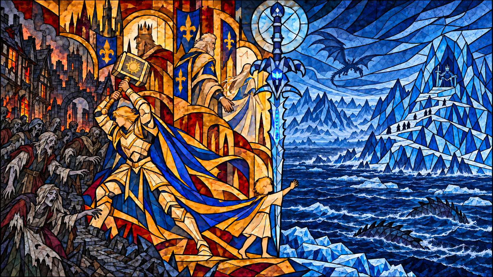
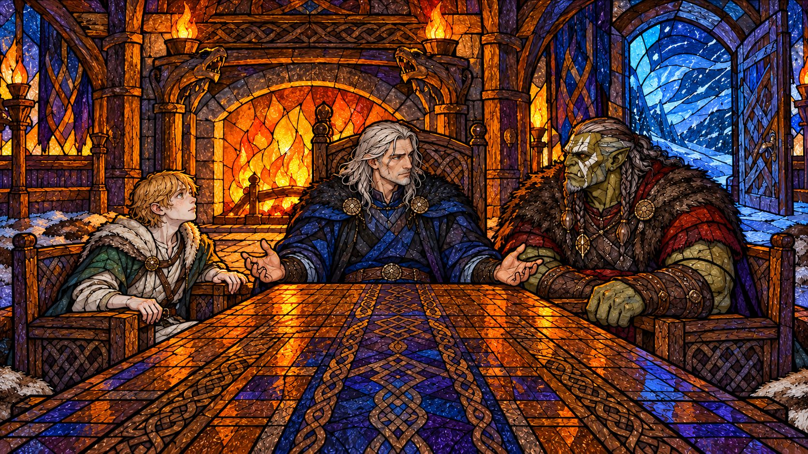
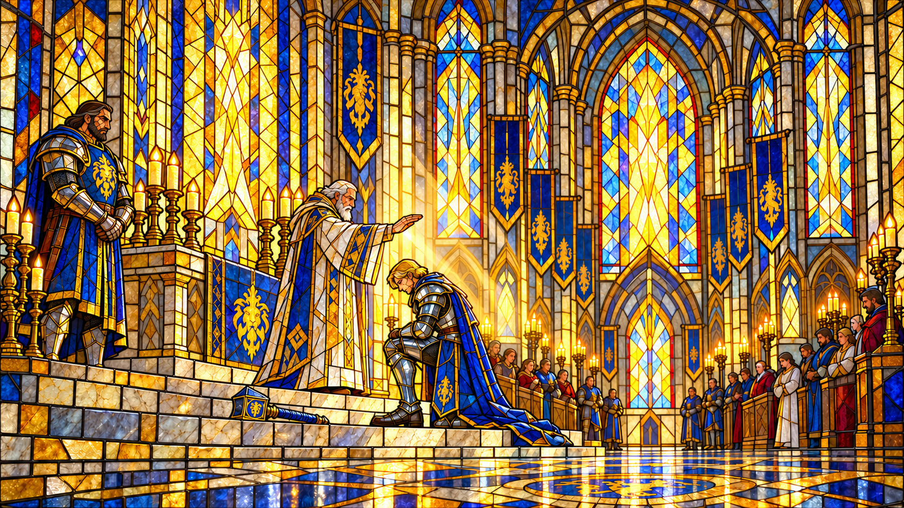
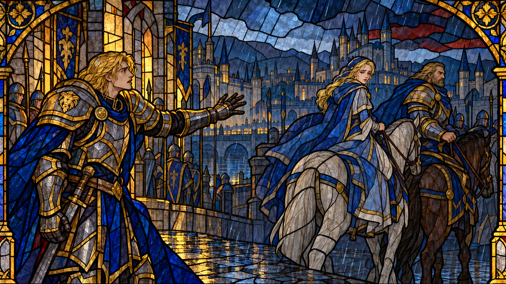
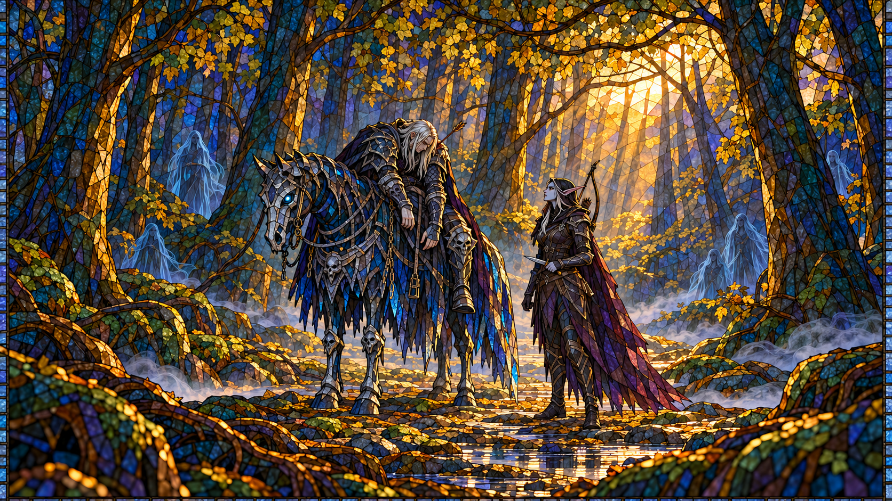

全书叙事范围
阿尔萨斯人物总览
守护与占有

曾想守护的人
阿尔萨斯曾经相信，拥有力量，就能够使珍爱的一切免于失去。他在马厩里见证无敌出生，把看小马的快乐分给丧父的瓦里安；他向父亲学习关心臣民，在导师严格的训练中争取认可，也与吉安娜共享过不必防备彼此的青春。后来那个令北地众生恐惧的名字，最初属于一个会同情、会自卑，也急于证明自己的孩子。
雪中失马使这种急迫有了伤口。他的冒险让无敌摔断前腿，暴雪又阻隔救援，最终只能亲手终止爱马的痛苦。他隐瞒自己的责任，也发誓不惜代价保护需要帮助的人。负罪感可以成为理解他的线索，却不能替未来的一切预先定罪。十九岁受封时，圣光真实地回应了他；亲友的欢呼与他举起战锤的喜悦，都是他确曾拥有的生活。
与吉安娜相恋，让他一度看见共同的未来，又使他暴露出对拒绝的恐惧。他曾因责任与婚姻退缩，后来在调查瘟疫时与她重归亲密。他们并肩寻找病源、救援同伴，仍然盼望完成使命后回家。灾难开始吞没村镇时，想保护人民的愿望尚未消失，不能再来迟一步的焦灼，却越来越难容纳别人的判断。
逐渐替别人决定
斯坦索姆使裂口彻底张开。染疫与转化的威胁真实存在，全城感染却没有得到证实；吉安娜也没有已经验证的救治办法。阿尔萨斯仍决定先杀死居民，以未来国王的权威要求服从。乌瑟尔与吉安娜拒绝参与，他便把伦理上的拒绝听作背叛。保护的对象还未开口，他已经替他们决定了死亡。
北行复仇之后，他焚舟断绝士兵归途，又嫁祸曾替自己办事的佣兵。这些越界发生在握剑以前。冰洞里，他听过灵魂将受损的警告；穆拉丁重伤时，圣光仍回应过他的祈祷。他最终在耳语与力量的诱惑中停止治疗，转而握住霜之哀伤。操纵与诱导不能被省略，他一次次拒绝退回的选择，也不能被武器的邪恶全部遮住。
归乡的玫瑰迎来的，是杀死父亲的死亡骑士。阿尔萨斯让无敌以骷髅形态复起，并把重获陪伴当成自己从未选错道路的证明。随后，他弑师，毁坏精灵家园，将希尔瓦娜斯强制变成女妖，复活克尔苏加德。曾经渴望人民爱戴的王子，如今赞赏亡灵不会拒绝命令。若说这条路上有什么不断收紧，便是他把守护逐渐理解为永不失去，把忠诚逐渐理解为绝对服从。
然而受奴役者仍有意志。希尔瓦娜斯的恨没有被疼痛抹掉；控制松动时，她夺回行动自由，几乎以毒箭与复仇杀死他。亡灵也在别人的操纵下转身攻击他。他为所谓背叛痛苦，旋即又将它们贬作工具。那份以顺从为条件的爱，终于显出了条件本身。
王座上的最后选择
力量流失迫使他返回诺森德。挽救巫妖王，也是挽救自己；登上冰冠的急迫里，有不能死去的欲望。他击退凯尔萨斯，重伤仍在喘息的伊利丹，在旧日劝告与回忆的追赶中戴上头盔，与耐奥祖交融。
长梦最终让他面对残存的人性。病弱男孩是他仍能爱、能痛、能关怀的部分，曾经一次次被压下，却没有完全熄灭。阿尔萨斯认出他，随后主动斩除这个梦中形象，又斩除耐奥祖的梦中形象，宣布力量只属于自己。他摆脱支配的方式，是连同能够让自己迟疑的内心一起排除。
冰壳从王座上的双眼剥落，他在现实中醒来。小说把旅程停在这一刻：一个曾希望有力量保护别人的人，终于独占力量，而那些使守护具有意义的关系与能力，已被他亲手舍弃。
序章
序篇：长桌上的三个人
梦

风暴之中
阿尔萨斯的故事先从一场迟迟不醒的梦敞开。此时，他已经登上冰封王座；童年、亲人和曾经走过的道路，还要在后面的往事中重新显影。最先抵达读者耳边的，却是北地的风声。它穿过雪原，把一个沉睡者的存在带到那些并不认识他的生命身边。
铲齿鹿围成一圈，将幼崽护在中央；狼和熊藏进巢穴，连饥饿也不能驱使它们出去。卡玛古村的海象人退入地下避难所，等待风暴放过房屋和渔网。长者阿图伊克经历过许多个冬季，他知道，最近七年的这种风雪并非寻常天气。年轻人低声说起那个人正在做梦，立刻被喝止。地洞里重新安静下来，恐惧没有随声音一起消失。
另一处，牦牛人的鼓点仍在继续。萨满凯米库踏错一步，又找回了节拍。他们无法驾驭外面的异样风雪，却还能够围着火焰舞蹈、欢笑。读到这里，那股力量的庞大有了具体的尺度：它迫使众生避难，也使一场坚持举行的舞蹈有了抵抗的意味。阿尔萨斯尚未露面，旁人的生活已承受着他的阴影。
梦里的大厅偏偏温暖。圆木在壁炉中燃烧，毛皮铺满冰冷的地板，龙头雕塑托着火把。能够坐下三十多人的长桌旁，只有一个男人、一个兽人和一个男孩。男人坐在略高的主位上，清楚厅堂和同席者全是梦中景象。这场梦已经反复了多年，炉火照亮的安宁里，争斗一直没有停息。
尚未全输
兽人老了，却仍然强壮，脸上绘着骷髅。他曾是一位萨满，即使身处虚幻之中，也令人畏惧。男孩则在病痛里衰败下去，金发、清秀的面容和曾经清澈的绿眼睛，都挡不住身体的枯萎。他呼吸吃力，胸口微弱地起伏。男人望着他，觉得那颗心脏早该停止，然而它还在跳。
同一张桌子，把强壮与衰弱摆得如此悬殊。兽人提醒男人，男孩仍然留在这里；男人回答，他坚持不了多久。男孩随即咳出血和黏痰，却在艰难的喘息中提出反驳：胜负还未决定，他会证明这一点。那点声音没有力量上的优势，甚至说完一句话都要付出代价。
男人攥紧扶手。他厌倦了重复的争执，想让一切得到永久的了结。这里显出的阿尔萨斯，已经把倾听变成了等待争论结束。至少在这一刻，他没有因男孩的痛苦伸手，也没有因兽人的笃定放松下来。若把这张长桌看作内在冲突的形状，那么主位上的高度，似乎还不足以保证他能安然支配自己。
兽人催促他醒来，重新踏上所选择的道路。骷髅图案浮离面孔，木雕龙头像活物般摆动，厅门骤然敞开，飞雪卷进炉火照耀的空间。男人张开双臂，让寒风裹住身体。兽人以真正的力量相诱，要求把男孩彻底消灭；那是他的许诺，也是他宣称能够决定别人命运的口吻。
男孩被风吹出座椅，又颤抖着爬回去。他看向主位，目光里仍有希望，也有畏惧与决绝。我们还不必替这目光宣布结局。此刻，他能争取的只是继续留在这里，把一句话送到那个男人耳中。
“还没有全输。”
风声和狂笑都很响，男人却听清了每一个字。
第一部
第一篇：被寄予厚望的王子
黄金男孩

王子的世界
九岁的阿尔萨斯第一次认真注视一个新生命时，身上沾着干草和马的唾液。在巴尼尔家的马厩里，他帮忙安抚生产的母马亮鬃，看那匹湿漉漉的小马驹伸开细腿，睁着褐色眼睛望向自己。王位、礼仪和课程暂时都退远了。他原本嫌生产的场面黏腻，此刻却屏住呼吸，觉得眼前的小生命美极了。
这份亲近有日常生活的根基。他与养马人的儿子佳力姆堆沙堡、打雪仗，也会给城墙上的卫兵递一杯热茶。两种身份并未因此平等，孩子们却能暂时不在意。阿尔萨斯生长在亲密的家庭里，看到父亲认真听取臣民的诉求，也看到父亲容许自己穿过宫廷礼法，与普通人来往。守护人民对他而言，先是一种可以模仿的待人方式，然后才成为未来国王的责任。
战争很快让责任有了重量。暴风城陷落，瓦里安失去了父亲。阿尔萨斯听到消息便想到自己的家：如果父亲和熟悉的一切也突然消失呢？他在大厅门口望着王座上的泰瑞纳斯，第一次害怕有一天那座王位会属于自己。他渴望被当作大人，却还不愿用失去父亲换取成年。
父亲不许他参加重要会谈，他便藏进包厢偷听。愤怒里有好奇，也有不被承认的委屈；但面对真正受伤的同龄人，王子的体面话很快失去效用。得知莱恩遭信任的人刺杀，他只好笨拙地邀请瓦里安，等天气好了，一起去看新生的小马。这个孩子拿不出解除哀痛的办法，却愿意把刚刚获得的快乐分给对方。瓦里安终于哭出来，阿尔萨斯留在他身旁，看着窗外落雪。
他也会在朋友面前自卑。瓦里安的剑术远胜于他，安慰反而使差距更加难堪。穆拉丁撞见他练剑失手，没有把这场出丑变成长久的笑话，而是主动提出教他。严厉的训练让王子遍体伤痛，他仍一遍遍重新举起武器。十四岁时，他终于逼得导师认输；担心自己伤到老师的惊慌，又随着矮人的笑声变成喜悦。穆拉丁为学生进步而高兴，阿尔萨斯也由此得到一种不靠血统授予的认可。
吉安娜给他的少年生活带来另一种欢快。他在礼拜堂偷偷注意这个金发女孩，设想她一定愿意打雪仗、游泳，能做自己的玩伴。护送她前往达拉然，既有履行礼节的理由，也藏着逃离课程、与她相处的私心。少年人的责任与欲望，常常就这样轻易地走在同一条路上。
然而同一次夜间冒险，也显出了他们不同的目光。隔着战俘营木墙，吉安娜看见兽人的家庭与婴儿，问他们是否应该永远被关着；阿尔萨斯想起的却是暴风城的毁灭，认定这些俘虏恢复自由便可能再度杀人。他能为朋友的丧亲悲伤，却还不能把同样的同情给予被称为敌人的人。温暖确实存在，它的边界也同样清晰。
无敌与失去
无敌是他最自由的伙伴。幼驹长成白马以前，他就急于骑上它，违背驯马师的警告，结果被甩落，马腿也受了伤。面对乌瑟尔，他没有全说实话；导师识破隐瞒，提醒他，过早施加负担可能使爱马残废。阿尔萨斯明白自己错了，却同时为训斥感到烦躁。他爱无敌，也需要学习：爱不能代替对另一个生命的耐心。
后来，他们真正成为默契的骑伴。在无敌背上，宫廷的要求似乎都追不上他。姐姐佳莉娅因婚事被父亲安排而哭泣时，他曾真心难过，却无法回答她关于选择权的追问，最后只说王室必须坚守责任，便逃到马厩。无敌不问他将娶谁、不要求他成为怎样的君主，只与他一同奔跑。骑马让他暂时摆脱问题，也使那种不受束缚的快乐越来越珍贵。
这时的他已经能在具体处境中保护别人。十七岁巡视敦霍尔德，见布莱克摩尔将塔蕾莎当作取悦宾客的物件，他感到愤怒。女孩被送到他的房间后，他拒绝占有她；发现她身上的瘀伤，又明白单纯让她离开可能使她受罚，于是请她留下吃点心、谈话。这份体贴并非一句自我赞许，而是她得以松弛下来的几个小时。
但同一趟访问里，他又沉醉于角斗场的喧闹。他对野兽受虐的不安很快被搏杀的精彩冲淡，也认可人类角斗士与兽人受到不同待遇。塔蕾莎眼中的仁慈王子与为角斗欢呼的少年，是同一个人。理解他的成长，需要容纳这种尚未解决的矛盾：他开始承担权力，却未必能持续追问自己享受的东西由谁付出代价。
将满十九岁前的冬天，这个问题以最私人、最痛苦的方式来到面前。父亲和乌瑟尔外出，阿尔萨斯抓住自由的下午，骑无敌奔向原野。冰晶越落越密，他仍想着再跑一段，去巴尼尔农庄避雪。熟悉的高地和曾经成功的跳跃使他相信，他们还可以像往常一样飞过去。
无敌的后蹄却在冰石上打滑。醒来后，阿尔萨斯看见白马两条前腿已经碎裂，鲜血融开积雪。他想找牧师，想找乌瑟尔，但熟悉的治疗者远在别处，暴雪又遮住道路，连近旁的农庄也难以找到。此刻并非有一条便捷的救援道路而他不肯走；他面对的是无法及时求援、爱马正在失血和受冻的困境。
他把无敌的头放在腿上，记起初生时的小马，也知道这场冒险本可以避免。最后，他抚摸它的鼻子，道歉，举剑刺穿它的心脏，终止了痛苦。陪伴他逃离束缚的生命，死在他自己的手里。
获救后，他让巴尼尔父子相信这只是一场意外，没有说出全部经过。保护别人的誓愿随即在他心中形成，甚至愿意为此牺牲自己，无论代价如何。这里既有爱，也有无法诉说的负罪感。从人物经历来看，失马使他更迫切地想拥有救人的力量；但一次创伤并不能替一个人决定所有未来。真正未解的问题是，他能否一边承担责任，一边承认力量仍有边界，也承认自己会犯错。
圣光中的新骑士
受封那天，他仍在想念无敌。新战马优秀而可靠，却不能填补空缺；炎热的天气与厚重铠甲又让他烦躁。他来到暴风城的圣光大教堂，心中并无一位天选英雄应有的笃定，反而怀疑自己是否配得上荣耀。
乌瑟尔给过他一个出乎意料的回答：所有人都有瑕疵，圣光仍然爱他们；圣骑士也曾怀着同样的疑虑站在仪式之中。严格的导师在这里没有要求学生伪装完美，而是告诉他，可以带着不足开始服务别人。当乌瑟尔为他安放肩甲时，眼里还有泪光。约束与关爱，在这个人身上从未分离。
法奥大主教直呼阿尔萨斯的名字，不带王子的头衔。他意识到，在这里自己首先是一个人。他立誓保护无辜者，等候祝福，却在短暂的沉默中骤然恐慌。随后，光真正照入了身体，从温暖到灼热，使他经历净化与充盈。他握住银色战锤，感到圣光减轻了重量，在喜悦中将它高举。大教堂响起欢呼，新同伴、家人与朋友拥到他身边。
父亲说今天为他自豪，他竟又敏感地追问，难道别的日子就不自豪吗？获得荣耀并未使他的不安自动消失。十九岁的阿尔萨斯仍急于决定自己的人生，想走出宫廷，让地位、才能和力量派上用场。可这不取消刚才的光，也不取消亲友真实的期待。此刻他已经成为白银之手的一员，拥有学习仁慈、实践誓言的机会。黄金男孩的故事停在这道敞开的门前：被寄予厚望，也确曾有力量回应那些希望。
第二部
第二篇：爱与救援的裂口
光明女士

回望中的爱与共同愿望
故事先停在一个较晚的雨天。已届而立的吉安娜坐在塞拉摩的塔楼里，风暴使她重新想到阿尔萨斯。艾格文要听的，不只是巫妖王造成了什么，而是成为巫妖王以前的那个人。这场炉边谈话属于后来的回望：眼前的统治者已经知道许多结局，回忆里的年轻法师却还不知道。接下来，时间退回达拉然，退回爱情与共同生活仍然可以期待的岁月。
受封之后，阿尔萨斯以学习君主所需知识为由来到魔法之城，真正吸引他的还有吉安娜。在她眼里，他没有凯尔萨斯那般无可挑剔的仪态，却能使她放松。他记得那个愿意同他冒险的女孩，也看得见她认真求学的一面。夏末的野餐、从山上带来的雪球和嬉闹后的初吻，让儿时友谊变成了相恋。那段快乐确实存在，不能因为后来发生的一切，就把它写成一场从开始便注定虚假的表演。
吉安娜也始终有自己的方向。她希望凭实力成为法师，在宴会上反对把被俘的智慧生命当作野兽屠杀，并不因王子在场就收起判断。恋爱没有抹去这些差异。凯尔萨斯撞见两人的亲密时，阿尔萨斯曾被比较与嫉妒刺痛，直到她明确选择了他。被爱给予他安定，却也显出他对失去与拒绝的敏感。
随着长辈默许，恋情进入王宫生活。阿尔萨斯接下更多公共职责，在万圣节把点燃稻草人的荣耀交给吉安娜，与她走进欢呼的人群。她的火焰照亮庆典，也照亮他对未来的想象。那一夜，两人更加亲密；在满足之中，他却突然恳求她永远不要拒绝自己。起初，这像是一个年轻人在幸福面前暴露的惶恐。后来，当爱与服从不再能够重合，这句话会成为他用来责备她的旧日凭据。
冬幕节里，吉安娜提到未来的孩子，阿尔萨斯想到的却不只有家庭，还有父母离世、王冠压顶，以及自己可能成为坏丈夫、坏国王的恐惧。他先退了回来，提出暂时只做朋友。他并非不再爱她，而是害怕亲手毁掉已经拥有的美好。吉安娜的痛苦没有因他的解释消失；他则把大量时间投入训练与冥想，试图压下思念。对责任的热望和对责任的畏惧，在此时仍纠缠于同一个人身上。
瘟疫调查让他们重新并肩。安东尼达斯派吉安娜查明北方疾病与魔法的联系，阿尔萨斯带兵护送。重逢时，她已经能从容应对追来的兽人；他看懂了她的笑容，没有让士兵替她完成战斗。这份信任延续到营地的夜谈，两人承认仍然相爱。阿尔萨斯甚至想到了任务结束后的婚礼、玫瑰花瓣和金发孩子。此刻他相信，圣骑士与法师联手，能够查清灾难、拯救人民，再一起回家。
瘟疫与斯坦索姆的分歧
最初的调查没有背离这个愿望。农场无人应答，吉安娜担心病人无法出门，阿尔萨斯便承担起走近查看的责任。行尸突然扑来，圣光、刀剑与她的烈火共同救下队伍。粮仓周围枯死的土地、箱上的安多哈尔印章，又把他们引向粮食传播瘟疫的可能。担心吉安娜接触死土后受害，他向她施用圣光，并命所有人戴好手套；但他没有在她体内感到瘟疫，这不能被当作成功治愈感染的例证。
线索逐渐清楚，敌人却越来越难以阻止。通灵师操纵亡灵，说明最初对兽人的怀疑不足以解释灾难。在安多哈尔，克尔苏加德承认命诅咒教派散发染疫谷物，又把他们的注意力引向玛尔加尼斯与斯坦索姆。仓库早已搬空。阿尔萨斯追上并杀死了他，却无法追回已经流向村镇的粮食。打倒一个执行者的胜利，无法填补来迟一步的恐惧。
他开始把这种无力全算在自己身上，催逼队伍赶路。吉安娜施法后精疲力竭，连骑稳马都困难，只能请求短暂休息。他仍关心她，却越来越不能容忍任何延误。她提醒他，圣骑士既是战士，也是治疗者；他听见的却近乎质疑。救人的目标尚未消失，但消灭敌人的急迫，正挤压他倾听同伴、承认自身限度的能力。
壁炉谷把恐惧变成了眼前景象。吃过粮食的人突然倒下，一个人向王子求救，阿尔萨斯却因惊骇退后，没有尝试治疗；片刻后，尸体重新站起。瘟疫能够制造亡灵已得到可怕的印证，但能否治疗，在这一刻仍是未解的问题。随后他举锤坚守，直到乌瑟尔和不肯休息的吉安娜带援军赶到。他们真实地救援过彼此，也真实地抵挡过亡灵；关系的破裂并非源于从未有过信任。
战后，乌瑟尔带着自豪赞扬他的坚持，他却听成责备。导师认为，人有时只能尽量减少伤害，不能修补一切；阿尔萨斯越来越把不能做到一切理解为不能接受的失败。先知劝他带人民渡海西行，他把离开家园视作抛弃，又认定杀死敌人才是保护臣民的道路。吉安娜继续劝告，也继续陪伴。直到斯坦索姆城外，共同救援的愿望才被迫面对无法掩饰的分歧。
雨中传来异常甜腻的面包气味，阿尔萨斯据此认定全城已经感染，必须在转化之前杀死居民。威胁是真实的，他的紧迫感也有来由；然而全城感染并未得到逐一证实。吉安娜指出，他们不知道感染人数、致死剂量，也不知道是否仍有人能够获救，请求时间召集法师研究。她没有拿出经过验证的解药；这场冲突因此不能被简化为已有现成救法而王子故意不用。但未知同样不能变成杀死所有人的充分证明。
阿尔萨斯要求她回答：若注定成为亡灵，是否宁愿先死去。吉安娜承认自己的选择，却坚持他们不能替全城作出选择。问题从怎样保护人，转成了谁有权决定这些人的死亡。他以未来国王的身份命令乌瑟尔服从，又把拒绝当作叛国，解除导师的统帅权和其属下圣骑士的军职。王位继承权被他拿来封住争论，而那些本应接受保护的人，没有得到说明自己的机会。
随后，他向吉安娜伸出了戴铁手套的手。她记得它的温暖，也记得它曾经施放治疗之光，却无法在此刻握住它。乌瑟尔帮助她上马，带她离开。阿尔萨斯把这一选择理解为背叛，甚至闪过她也许正确的疑问；随即，他因为不能接受自己会成为屠杀者而压下了这个念头。这里呈现的是他如何说服自己，并不是他已经证明自己正确。
留下的士兵随他进入城市。他们杀死亡灵，也杀死尚有呼吸、还在困惑地等待王子解释的平民，焚毁有人躲藏的房屋。第一次击倒活人时，战锤不再闪耀圣光；痛苦没有使他停手。玛尔加尼斯现身并转化居民，又进一步强化了他的确信，却没有回答此前那些有关全城感染的疑问。最终，恶魔逃往北方，阿尔萨斯的救援使命被复仇誓言推向诺森德。
三日后，吉安娜回到废城，想起一天半以前的对话：阿尔萨斯请求她同行，她曾劝他不要踏入恶魔的陷阱，并拒绝陪他北行。如今站在尸体之间，她仍无法割舍对他的爱。乌瑟尔准备把远征行踪告知国王，她则接受先知的建议，尝试召集人民西迁。她的自责说明爱与痛苦仍在，不能据此把屠城责任转移给没有服从的人。她选择的，是把尚能行动的力量用于救人，而不是继续追随他的复仇。
焚舟之后，冰洞之前
北地没有立刻给阿尔萨斯答案。他梦见一把符文剑使无敌恢复健康，把梦解释为预兆；现实中，搜寻仍然缓慢。与穆拉丁重逢，曾让他重新笑起来。热食、啤酒和老朋友的烟草气味，使荒原短暂有了熟悉的温度。他向导师讲述瘟疫，却隐去屠城的全貌。穆拉丁告诉他霜之哀伤的线索，两人于是把寻剑与寻找玛尔加尼斯合为共同任务。
父王的召回令打断了远征。士兵服从国王，准备回家；阿尔萨斯却不肯允许这条退路存在。他雇来当地佣兵，抢先赶到海岸焚烧舰船，再向自己的士兵谎称佣兵擅自烧船，率先攻击曾替他办事的人。穆拉丁参与了前往海岸与焚舟的行动，却明确谴责他的欺骗和出卖。阿尔萨斯把责任推给乌瑟尔，认为是召回使自己不得不如此。这一切发生在握住魔剑以前，不能都归给后来才取得的武器。
当亡灵围攻营地，他愈发确信只有霜之哀伤能够扭转战局。穆拉丁怀着不安带他突围，进入藏剑的冰洞。守卫阻止他，并说明要保护的是他，而非宝剑；他把劝阻当作骗局，击溃守卫。接着，穆拉丁读出铭文：剑会给予力量，也会损伤挥剑者的灵魂。警告已被清楚说出。阿尔萨斯仍把自身早已遭受的痛苦，当作可以继续付出任何代价的理由。
他口中的拯救与复仇越来越难以分开。脑中出现死者的形象，也出现要求复仇的耳语；他不能接受再次失败，向不知善恶的力量献出一切。冰壳爆裂，冰锥刺伤穆拉丁的上腹。阿尔萨斯最初奔向他，摘下手套、按住伤口祈祷。圣光确实回应了，白光包裹着他的手。不能把此刻写成圣光已经将他抛弃，或者他只剩下取剑一条路。
随后，霜之哀伤飞到面前，耳语把圣光的无力与符文剑的力量反复送入他的意识。他在近乎被催眠的诱惑中站起，停止治疗，伸出沾着朋友鲜血的手握住剑柄。诱导真实存在，而听过警告、拒绝离开、最终转向魔剑的选择也真实存在。穆拉丁在这里是重伤者；阿尔萨斯后来报告他已经死去，那是王子的判断，本篇不据此确定矮人的最终命运。
归来的陌生人
符文剑让阿尔萨斯突破亡灵，面对玛尔加尼斯。恶魔告诉他，耳语来自黑暗之王；而同一个声音此刻催他复仇。他杀死惊愕的敌人，以为一段旅途结束，耳语却许诺更多力量与权势。他走向暴雪深处。原文在此留下空隙，随后转到归乡，本篇不把没有展开的风雪经历补成另一段传奇。
洛丹伦为胜利者敲响钟声，人群向归来的王子撒下玫瑰。阿尔萨斯想起曾经设想的婚礼：本该与他站在一起的吉安娜，此刻只是记忆中的身影。他接住一片花瓣，花瓣在掌中枯萎。王座厅里，父亲欢迎儿子平安回家，掀开的兜帽却露出骨白头发和苍白面容。阿尔萨斯拔出霜之哀伤，杀死泰瑞纳斯，又把卫士处理成凶手。被称为守护成果的归来，给迎接他的人带来了杀戮。
他离开广场，奔向无敌的坟墓。耳语鼓励他动用新的力量，七年前埋下的爱马以骷髅形态重新站起。它轻蹭他的手，使他获得了久违的亲近，也让他找到一种更危险的安慰：他把亡灵的复起视为宿命的证明，反过来断定当年的失去乃至此后的选择从未有错。这是他的自我赦免，无法取消父亲与臣民已经承受的死亡。
从达拉然到这座坟前，他逐渐失去了让他愿意回家的关系，却越来越相信自己终于掌握了挽回一切的力量。吉安娜曾与他共享希望，也在爱中拒绝屠杀；她的离开保留了一个他不肯接受的界限。如今，复起的无敌能够留在他身边，他却已不再用活人的意愿衡量自己的守护。第二部结束时，归来的王子获得了力量，而最初想与众人一同保存的生活，已经被他亲手破坏。
第三部；尾声
第三篇：服从的代价
黑暗女王

女王回望与被制造的服从
先看后来。幽暗城深处，希尔瓦娜斯已经成为被遗忘者的女王。她走进药剂师的试验室，观看一种菌株杀死人类，也杀死亡灵。草药气息曾短暂唤起她的思乡之情，随后，复仇的兴奋又占据了她。她要摧毁天灾，连同生出阿尔萨斯的人类一起报复。这是一个已夺回行动自由、却仍被仇恨灼烧的人；她此刻的残酷，不能抹去她曾遭受的暴力，也不能因那暴力便获得赦免。
要理解这位女王为何如此憎恨阿尔萨斯，时间必须退回她还是游侠将军的时候。那时，毁掉洛丹伦的死亡骑士正奉命去复活克尔苏加德。他曾追杀这个通灵师，现在却要保存他的遗骸。提克迪奥斯告诉他，霜之哀伤窃取的第一个灵魂就是他自己。他嘴上宣称不需要灵魂，内心却仍会反驳他所谓毫无悔意的断言。他所做的，是把那一点声音压下去，把不安称为必须除掉的软弱。
过去并没有因此停止追赶他。守在墓地的格文拉德记得授予他的战锤；护送父王骨灰的乌瑟尔记得他曾信奉圣光。阿尔萨斯先杀死昔日兄弟，又要夺走导师怀中的骨灰瓮。听见父亲的名字，他仍会战栗；忆起圣光的温暖，他曾短暂放低符文剑。可耳语重新响起，他又握紧了它。每一次迟疑之后，都跟着一次把自己推得更远的行动。
乌瑟尔不是任他处置的衰弱老人。圣光充盈着导师，战锤几乎杀死这个学生。阿尔萨斯在重创中重新握住霜之哀伤，借巫妖王的力量扭转战局。他告诉这位将死的长者，自己打算永远活下去，随后才挥下符文剑，刺穿乌瑟尔的咽喉与心脏。导师几乎立刻死去。随后，他倒出泰瑞纳斯的骨灰，风却将灰尘吹回他脸上。那场惶恐没有使他停步。他强迫自己恢复镇定，把空瓮交出去，装入通灵师的遗骸。父亲与导师一同被留在身后，留下的容器继续为他的新使命服务。
前往奎尔萨拉斯的路上，精灵叛徒达尔坎轻易出卖同胞，使他想起自己与父亲曾受到的爱戴。凡人会动摇，会被收买；他身后的亡灵却只会服从。阿尔萨斯因此觉得，新的臣民更好。若说过去他渴望的是人民的爱，那么此刻，他已经开始用无法拒绝命令来衡量忠诚。他不再需要辨认一个人的愿望，只需要确认那个人是否在自己的控制之内。
希尔瓦娜斯让这种统治碰到了意志。她最初相信魔法大门足以守住故土，却亲眼看到部下死去，又被唤起成为敌军。第一道门破了，她背起伤员撤退，派人传讯，炸断桥梁，为家园争取时间。当取胜的希望缩小时，她仍组织居民疏散，让不能战斗的人带着家人离开。她的抵抗有明确要保护的人，并非只为与死亡骑士较量高下。
阿尔萨斯却把这抵抗视为冒犯。他用亡灵身体搭起桥梁，追过河去；无敌涉水时唤起昔日断腿的记忆，他随即用如今的强大安慰自己。他相信爱马再不会受从前的苦，也不必再承受父亲的否定、导师的约束和吉安娜的拒绝。这样的自我安慰，将失去生命解释为免受伤害，又将别人的反对解释为他们自己招来的灾难。
终于，他在最后的抵抗中刺倒希尔瓦娜斯。她请求一个干净的了结，他偏不肯给。他将她的灵魂强行从死亡的安宁中扯回，变成女妖，以痛苦迫使她服从，还声称她与族人的命运都是她的选择造成的。读到这里，必须把他的说法与发生的事情分开：进军、杀戮和奴役来自他，守护家园不是对此负责的罪名。
她的行动被控制，意志却没有消失。银月城陷落，太阳之井遭到污染，克尔苏加德从井中重生，她被迫参与对同胞的杀戮，同时仍爱着他们、憎恨迫使她下手的人。阿尔萨斯称赞她是一件优秀武器，甚至意识到她可能反噬，却仍将她留在身边。夺走一个人的自由，不等于获得那个人的归顺；这一点，他从她的每一次反抗里都能看见，却继续以折磨回应。
控制松动后的反噬
阿尔萨斯仍有会被触动的地方。无敌再度被斩断前腿时，他的惊痛使希尔瓦娜斯看见施害者身上近乎人类的表情；他杀死精灵王，修复爱马，却逼她伤害她深爱的族人。那份残留的爱没有阻止暴力，反而与暴力并存：他珍惜属于自己的生命与记忆，也剥夺别人珍惜同样事物的权利。
克尔苏加德后来告诉他，早在天灾开始之前，巫妖王就已选中了他。瘟疫、北地的要塞与精灵的毁灭，都是为燃烧军团铺路。这些消息使他不安。他不喜欢被操纵，却又把操纵理解为成为强大武器所必需的锻造。他甚至想过，若预先知道一切，自己或许仍与吉安娜、乌瑟尔在一起。念头抵达父亲时，他又转开了话题。被利用是真实的，反复拒绝追问它的代价，也同样发生在他身上。
达拉然带来另一次接近旧日的机会，但没有重逢。吉安娜仍爱着他，也曾想过劝说；最终，她听从安东尼达斯的嘱托，离开去照顾那些等待她保护的人。阿尔萨斯杀死大法师，取得麦迪文的法术书，保护克尔苏加德完成召唤。他庆幸不必与吉安娜交战，随后用新的战斗把她和年轻的自己赶出意识。她走向生者的责任，他继续把无法面对的感情交给杀戮去遮盖。
阿克蒙德到来，却将天灾的指挥权交给恐惧魔王。阿尔萨斯付出的那些代价，在更强大的主宰眼里仿佛只是用完即可丢弃的工具。他无法忍受这种轻慢，更无法忍受自己所做的一切变得毫无意义。于是，他依照巫妖王的计划前往卡利姆多，利用伊利丹对力量的渴望，引导他夺取古尔丹之颅、打击提克迪奥斯。他知道用什么诱惑另一个人，因为力量也正是一路把他引到这里的许诺。
军团战败后，他回到洛丹伦，赶走恐惧魔王，要求部下称自己为国王。宣告还没有说完，剧痛便把他压倒在坐骑上。巫妖王的力量正在流失，他也随之衰弱。希尔瓦娜斯发现自己能够攥起拳头，听不见那个控制她的声音了。她寻求与恐惧魔王联合，却明确拒绝换一个主人。对阿尔萨斯而言，这是力量衰退；对她而言，则是重新把意志落实为行动的机会。
他曾以为不会背叛的亡灵，很快在恐惧魔王操纵下转身攻击他。最初，他还为臣民的“背叛”心痛，明知它们只是服从最强者，仍觉得自己受了伤。逃亡迫使他经过熟悉的王宫走廊，那些曾许诺保护的人，如今正以他制造的模样追杀他。他短暂想到，自己为力量出卖了他们，随后又把回忆封闭起来。等他逃出宫墙，亡灵在他眼里已经重新变成工具与腐肉。他对它们的爱，原来如此依赖它们的顺从。
女妖假意相救，将他领入陷阱。重新占据自己躯体的希尔瓦娜斯从树后走出，一箭射穿他的左肩。麻痹使他失去行动能力，她要他缓慢尝到自己曾施加的苦痛。如今，要求痛快死亡的人换成了他，拒绝给予的人换成了她。这一刻，他造就的受害者终于能够决定如何对待他，却也把他教给她的残酷带回他面前。
幽灵女孩的干预与克尔苏加德的到来救了他。他曾被巫妖的忠诚感动，脱险后却把信任解释为彼此共同依附巫妖王的事实；女孩仍在微笑，他却坚持她也不是自己的子民。希尔瓦娜斯的复仇没有成功，她同样没有退回奴役之中。她拒绝恶魔的招揽，准备为被遗忘者争取军队与城市。自由没有恢复她的生命，也没有消除她的痛苦，却使她的道路终于不再由阿尔萨斯下令。
返北与王座
重返诺森德时，阿尔萨斯已不是只需前进便能得到胜利的统帅。他的身体衰弱，力量不断流走，敌人正逼近冰封王座。凯尔萨斯率领的血精灵让他看见，被摧毁的民族没有如他想象般消失；伊利丹更从曾经被他利用的人，变成了足以威胁他的敌手。控制别人的欲望不断制造敌人，而维系自身的力量，又让他不能离开另一个主宰。
阿努巴拉克引他穿越艾卓—尼鲁布的地下废墟。古老王国的统治者如今服侍巫妖王，又与仍活着的同族交战。阿尔萨斯看着这个盟友，也开始担心控制若继续衰退，对方是否会反抗。这只是他的猜疑，并非已经发生的背叛，却足以说明：他对忠诚的信任，越来越取决于自己是否还握有压倒性的力量。
支撑这趟艰难行军的，是求生。他很清楚，巫妖王若被毁灭，自己也将随之死去。曾向乌瑟尔宣布永生的人，此刻不得不拼尽力量挽救自己的生命。救主与自救纠缠在一起，忠诚的名义已经不足以解释他的急迫。
抵达冰冠后，巫妖王告诉他，释放霜之哀伤时留下的冰牢缺口正在泄漏能量，并将能够给予的力量尽数交给他。阿尔萨斯重新强大起来，向敌阵冲锋。凯尔萨斯的武器挡住了他的剑，关于吉安娜与父亲的话也刺穿了他的自持。他试图用旧日情事羞辱对手，却被自己一直回避的记忆动摇。最终，凯尔萨斯传送脱身，活着离开了交锋。
伊利丹挡在最后的道路上。曾经关于力量的交易，如今变成近身搏杀。阿尔萨斯遭恶魔火焰重创，仍靠霜之哀伤发动反击。伊利丹倒地时胸口还在起伏、艰难喘息；阿尔萨斯将他留给严寒，转身走向王座。那是重伤后被弃置的敌人，尚不能算作一个已经确认死去的人。
登上尖塔的每一步，都有旧日言辞追上来。乌瑟尔对复仇的劝诫、吉安娜的承诺、穆拉丁对魔剑的警告，没有因为说话的人被远远抛下便失去声音。他继续向上，因为更强的召唤仍在许诺真正的力量。冰牢在剑下碎裂，里面却没有他预想中的肉身，只有破碎的盔甲与滚到脚边的头盔。他迟疑、发问，最终仍将头盔戴上。耐奥祖的意识涌入，他感到自己将被压垮，随之而来的却是交融。两个声音宣告合一，长梦由此展开。
尾声：长桌的最后选择
经过对一生的回望，阿尔萨斯重新坐到虚幻大厅的长桌边。序篇里的兽人和病弱男孩仍在等他。耐奥祖展示混杂过去与未来的幻象；阿尔萨斯相信那些景象终会成为现实，但此刻它们仍属于梦中见闻，不能当成他已经完成的功业。力量还在许诺更多，目光却终于转向那个一直没有死去的孩子。
他认出了男孩：那是尚未被冰寒熄灭的同情，是爱、痛与关怀的能力，是对父亲、吉安娜与过去的牵挂。霜之哀伤没有把这些全部夺走。男孩因被认出而恢复了一些生气，伸开双臂，相信仍然来得及。贯穿往事的那些迟疑与不安，在这里获得了形状；它们没有替他抵消罪行，却说明他曾一次又一次需要压制什么，才能继续走下去。
阿尔萨斯抚摸那张属于自己的脸，随即以霜之哀伤刺穿男孩。梦中形象消失，他把失去最后人性的感受称为轻松与净化。耐奥祖欢喜地宣告两者终于能够联合，他却再次举剑，刺进这个同样属于梦境的兽人形象。他已经取得需要的知识与力量，不肯再与任何人分享主位。这里发生的是梦中的主动斩除，不是大厅里两具真实肉身的死亡。
他所追求的独立，终于以排除一切约束的方式完成。看似没有主人能够再命令他，连同那个能够爱与悔恨的自己，也已被他决定舍弃。独占并不因此等于解脱；至少从这条路回看，他最后保留下来的，正是一路要求别人服从、又不断憎恨自己受制于人的意志。
梦外，吉安娜手中的茶杯碎了，艾格文也察觉到异常；希尔瓦娜斯感觉到与巫妖王有关的变化，催促加快计划。在遥远的王座上，覆盖眼睑的冰壳剥落，阿尔萨斯缓缓睁眼。长桌的争执已经结束，现实中的他开始移动。
“开始了。”